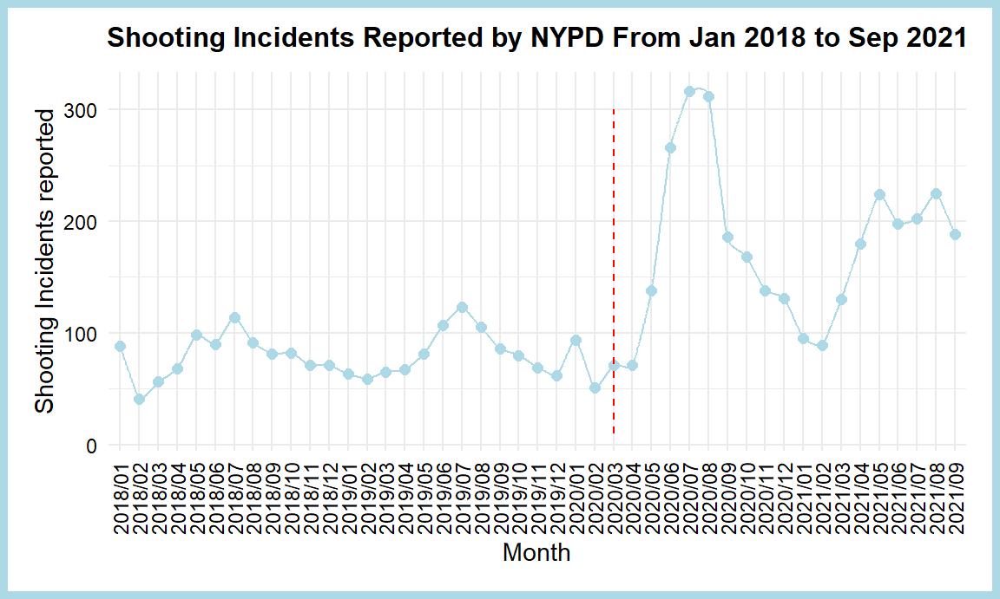

historic_NYPD_df = read_csv("data/NYPD_Shooting_Incident_Data__Historic_.csv") %>%
separate('OCCUR_DATE', into=c("month","day","year"),sep = "/") %>%
filter(year>=2018)## Rows: 23568 Columns: 19
## -- Column specification --------------------------------------------------------
## Delimiter: ","
## chr (10): OCCUR_DATE, BORO, LOCATION_DESC, PERP_AGE_GROUP, PERP_SEX, PERP_R...
## dbl (5): INCIDENT_KEY, PRECINCT, JURISDICTION_CODE, Latitude, Longitude
## num (2): X_COORD_CD, Y_COORD_CD
## lgl (1): STATISTICAL_MURDER_FLAG
## time (1): OCCUR_TIME
##
## i Use `spec()` to retrieve the full column specification for this data.
## i Specify the column types or set `show_col_types = FALSE` to quiet this message.year_to_date_df = read_csv("data/NYPD_Shooting_Incident_Data__Year_To_Date_.csv")%>%
separate('OCCUR_DATE', into=c("month","day","year"),sep = "/")## Rows: 1531 Columns: 19
## -- Column specification --------------------------------------------------------
## Delimiter: ","
## chr (10): OCCUR_DATE, BORO, LOCATION_DESC, PERP_AGE_GROUP, PERP_SEX, PERP_R...
## dbl (7): INCIDENT_KEY, PRECINCT, JURISDICTION_CODE, X_COORD_CD, Y_COORD_CD...
## lgl (1): STATISTICAL_MURDER_FLAG
## time (1): OCCUR_TIME
##
## i Use `spec()` to retrieve the full column specification for this data.
## i Specify the column types or set `show_col_types = FALSE` to quiet this message.df = bind_rows(historic_NYPD_df,year_to_date_df) %>%
janitor::clean_names()this is a plot showing the number of shooting incidents in NYC from 2018.1 to 2021.1 in months. we can see a big increase in April 2020 which match the time when COVID-19 outbreak happened in NYC. We assume the COVID-19 outbreak caused the increase of unemployment which lead to a big increase in shooting incidents.
df_time = df %>%
group_by(year,month) %>%
summarise(count=n()) %>%
unite(month,year,month,sep = "/")## `summarise()` has grouped output by 'year'. You can override using the
## `.groups` argument.df_time%>%
ggplot(aes(x=month, y=count,group=1))+ geom_xspline(color="lightblue",size=0.7) + geom_point(color="lightblue",size=2) +
theme(axis.text.x = element_text(angle = 90, vjust = 0.5, hjust =1)) +
labs(x = "Month", y = "Shooting Incidents reported", title = "Shooting Incidents Reported by NYPD From Jan 2018 to Sep 2021") +
geom_segment(aes(x = 27, y = 10, xend = 27, yend = 300) ,colour = "red",linetype="dashed") +
geom_text(aes(x=27, y= 310, label = "first case of death in NYC " ), colour = "red", vjust = -2, hjust = 0.5, size = 3) +
theme(plot.background = element_rect(colour = "lightblue", size = 3, linetype = 1,
fill = "white"), plot.title = element_text(colour = "black", face = "bold",
size = 12, vjust = 2.5, hjust = 0.3), plot.margin = unit(c(0.2, 0.2, 0.2, 0.2), "inches"),axis.text=element_text(colour="black"))## Warning: The `size` argument of `element_rect()` is deprecated as of ggplot2 3.4.0.
## i Please use the `linewidth` argument instead.
## This warning is displayed once every 8 hours.
## Call `lifecycle::last_lifecycle_warnings()` to see where this warning was
## generated.## Warning: Using the `size` aesthetic in this geom was deprecated in ggplot2 3.4.0.
## i Please use `linewidth` in the `default_aes` field and elsewhere instead.
## This warning is displayed once every 8 hours.
## Call `lifecycle::last_lifecycle_warnings()` to see where this warning was
## generated.
ggsave("NY_change.png")## Saving 6 x 3.6 in imagethis plot compares the shooting incidents in five boroughs in NYC. we set April 2020 as the outbreak time and before covid means 365 days before April 2020 and post covid means 365 days after April 2020. we can see from the plot that Broolyn has the most shooting incidents and Staten Island has the least. we can the after covid, all boroughs increases in shooting incidents numbers while the order remains the same.
df_boro_before = df %>%
arrange(year,month,day)%>%
slice(1206:2205) %>%
group_by(boro) %>%
summarise(count=n(),
ratio=(count/1000)*100,
time="Before COVID")
df_boro_after = df %>%
arrange(year,month,day)%>%
slice(2205:4355) %>%
group_by(boro) %>%
summarise(count=n(),
ratio=(count/2151)*100,
time="POST-COVID")
df_boro=bind_rows(df_boro_before,df_boro_after)
df_boro%>%
ggplot(aes(x=fct_reorder(boro,count),y=count,fill=time))+geom_bar(stat = "identity",position = "dodge")+
labs(x = "Different Boroughs in NYC", y = "Shooting Incidents reported", title = "Shooting Incidents Reported by NYPD From Five Boros in NYC")ggsave("NY_boro_comparison.png")## Saving 6 x 3.6 in imagethis plot cross-compared time periods and five boroughs. we define 0-6am as midnight, 6am-12pm as morning, 12pm-6pm as afternoon and 6pm to 11:59 as evening. the darker the box is ,the more shooting incidents happen. we can see from the plot that evening and midnight in Brooklyn and Bronx is the most dangerous as they have the most shooting incidents.
df_boro_time = df %>%
separate(occur_time,into = c("hour","minute","second"),sep = ":")%>%
mutate(hour=as.numeric(hour),
time_period = case_when(
hour>=0 & hour<6 ~ "MIDNIGHT",
hour>=6 & hour<12 ~ "MORNING",
hour>=12 & hour<18 ~ "AFTERNOON",
hour>=18 & hour<=23 ~ "EVENING"))%>%
group_by(time_period,boro) %>%
summarise(count=n(),
ratio=count/1000)## `summarise()` has grouped output by 'time_period'. You can override using the
## `.groups` argument.df_boro_time %>%
ggplot(aes(x = time_period, y = boro, fill = count))+ geom_tile() +
scale_fill_viridis_c(direction = -1)+
labs(x = "Different time periods", y = "Different Boros", title = "Shooting Incidents Reported Cross-compared with Time Period and Boros")ggsave("cross_comparison_boro_time.png")## Saving 6 x 3.6 in image